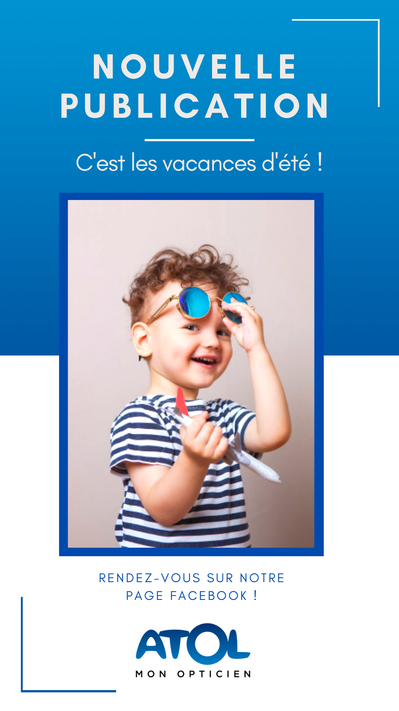
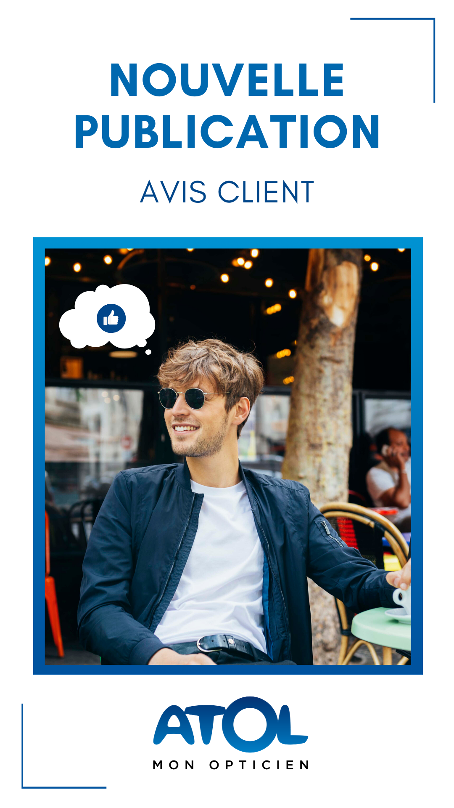
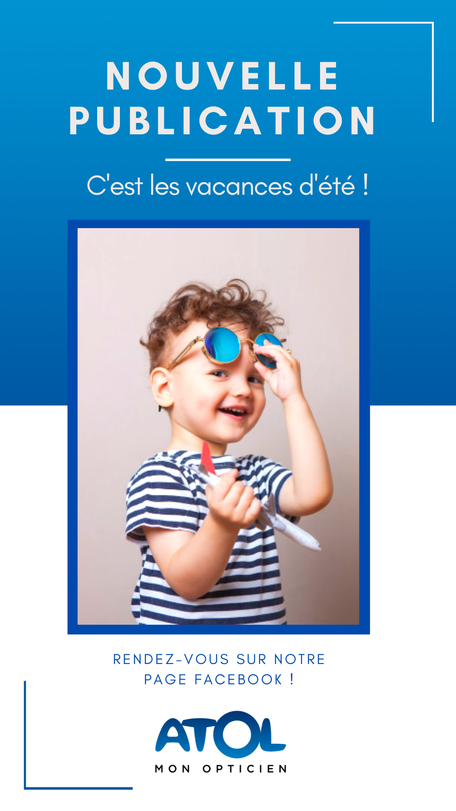
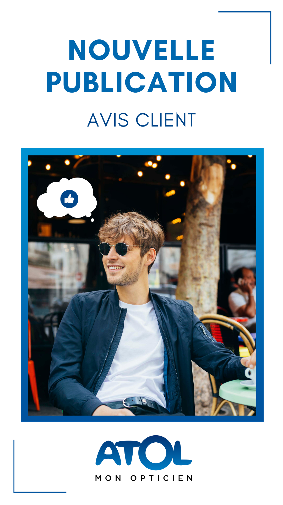
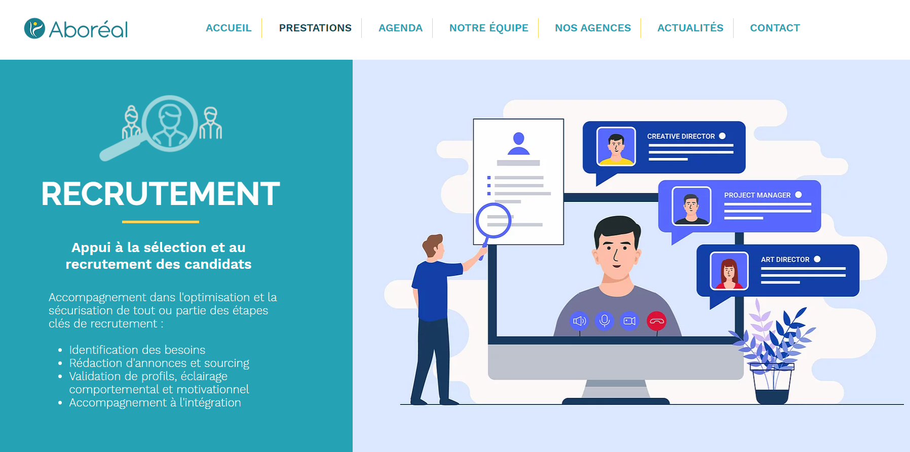
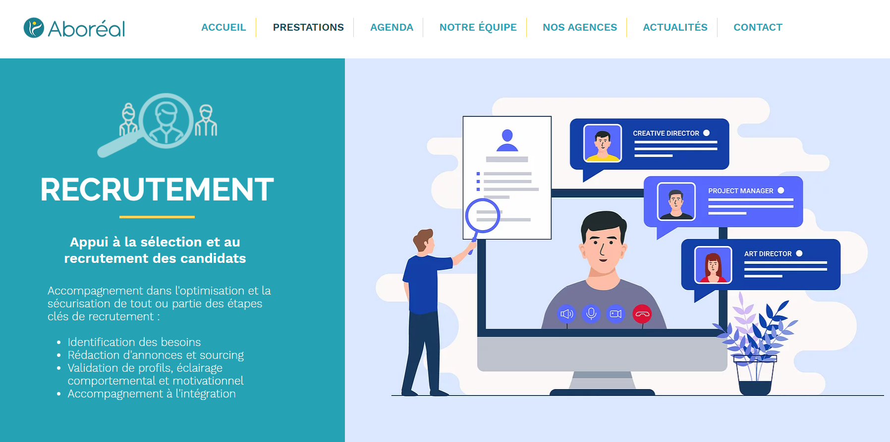

Après l’obtention de mon Baccalauréat STMG, j’ai réalisé une formation en DUT MMI qui m’a permis de développer mes connaissances dans divers domaines. En effet, cette formation polyvalente m’a permis d’acquérir de nouvelles compétences en réalisant de nombreux projets, que ce soit dans le domaine de la communication, l’infographie ou encore l’audiovisuel.
Lors de ma deuxième année d’étude, la réalisation d’un stage alterné sur une période de 6 mois a renforcé ma prise d’initiative, mon autonomie et ma confiance en moi. J’ai alors pu acquérir des compétences en matière de community management, stratégie de communication et gestion de projets.
Tout au long de mes deux années en DUT, j'ai eu l'opportunité de découvrir la suite Adobe et réaliser bon nombre de projets grâce aux logiciels comme Illustrator, InDesign, Photoshop ou encore Premiere Pro. Des projets de communication plus générals m'ont également été confiés, comme l'élaboration d'une stratégie de communication pour une marque fictive ou bien la mise en place de la communication d'un festival sur les réseaux sociaux : la complémentarité de ces projets, me menant à approfondir mes connaissances tout en mettant en oeuvre ma créativité, m'ont réellement conforté dans mon choix de travailler dans le milieu de la communication et du webmarketing.
.jpg)


.svg.png)
.svg.png)

.png)

Lors de mon stage alterné réalisé à l'agence KOMKOM, la communication visuelle et digitale est l'une des principales missions qui me fut confiée et plus précisément l’animation de plusieurs pages Facebook pour les différents clients de l'agence. L'agence KOMKOM gérant plus d’une trentaine de comptes Facebook pour l’enseigne ATOL France, il s'agit de l’entreprise dont je me suis principalement occupée pendant toute la durée de mon stage. Les magasins tels que Ixina, Story et Cuisine Plus ont également été des clients qui m'ont été confiés : que ce soit dans la création de planning mensuel selon diverses thématiques, la programmation de posts, la gestion des avis clients, des messages et commentaires laissés par leurs communautés, j’ai pu alimenter leurs pages respectives de façon régulière.
Mes missions consistaient donc en la rédaction de l'ensemble des posts et la réalisation de visuels pour les publications. Cette partie créative se faisait sur Photoshop, avec une charte graphique bien spécifique à respecter pour les différentes enseignes.
 



Afin d'alimenter davantage les pages Facebook des clients, je réalisais également des stories pour annoncer les nouvelles publications. Tout au long de mon stage, j'ai principalement réalisé ces stories sur la plateforme de conception graphique Canva, et quelques unes sur Photoshop.
Comme pour les textes et visuels, j’avais pour mission d'en créer plusieurs pour varier le contenu présent sur les différentes pages Facebook des magasins et qu'ils ne se retrouvent pas tous avec les mêmes. La réalisation de stories a été une de mes missions favorites, j’adorais concevoir et tester de nouvelles choses tout au long de mon stage, ce qui a beaucoup renforcé ma créativité.


La mise en place de jeux concours sur différentes pages Facebook d’Atol fût également une de mes tâches réalisées au cours de mon stage. En effet, la gestion et création de ces divers jeux concours nécessitait de passer par la réalisation de plusieurs étapes :


 

"La photographie est un domaine que je pratique par passion depuis environ 4 ans. J'aime photographier ce qui m'entoure et je n'ai pas de spécificité particulière : un portrait, un animal dans son milieu naturel ou un encore un beau coucher de soleil : beaucoup de choses me passionnent et je prends un réel plaisir à capturer l'instant présent !"
A l'avenir, j'aimerai pouvoir me lancer dans la photographie et allier mon métier à cette passion, pour laquelle j'éprouve beaucoup d'intérêt. Le domaine dans lequel je souhaite travailler est en parfaite adéquation avec mon appétence pour la photographie et je pense même pouvoir dire que c'est un plus dans les métiers de la communication d'avoir l'opportunité de mettre en application ses compétences personnelles au sein de son environnement professionnel.